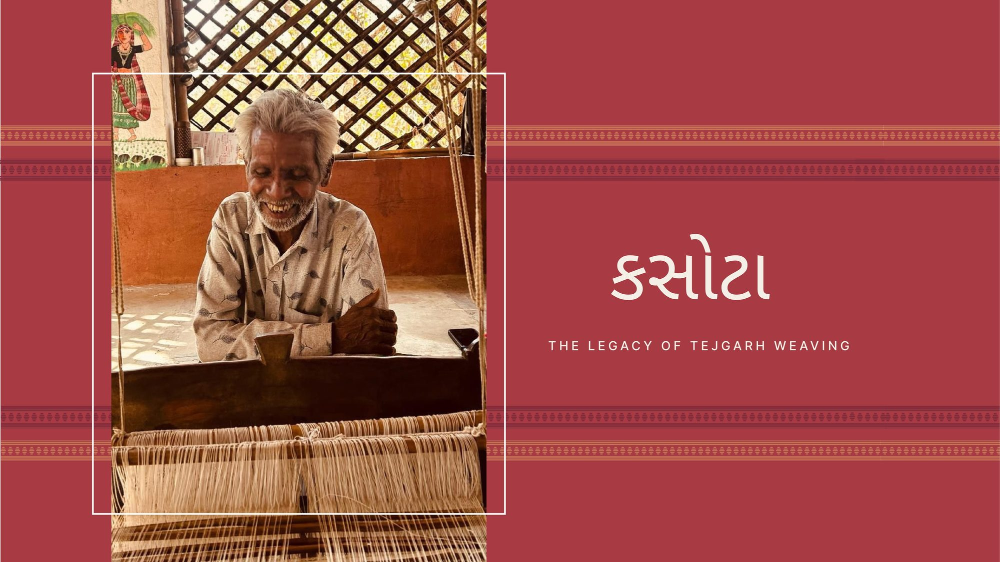
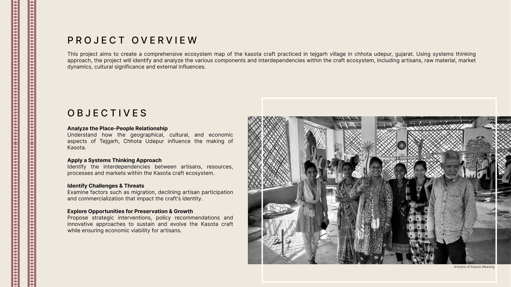
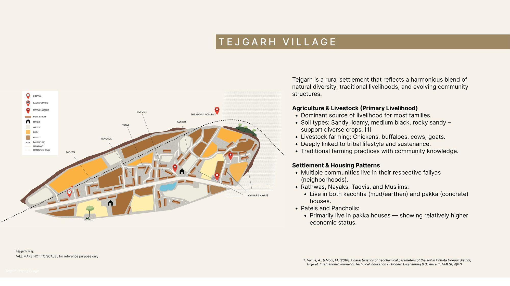
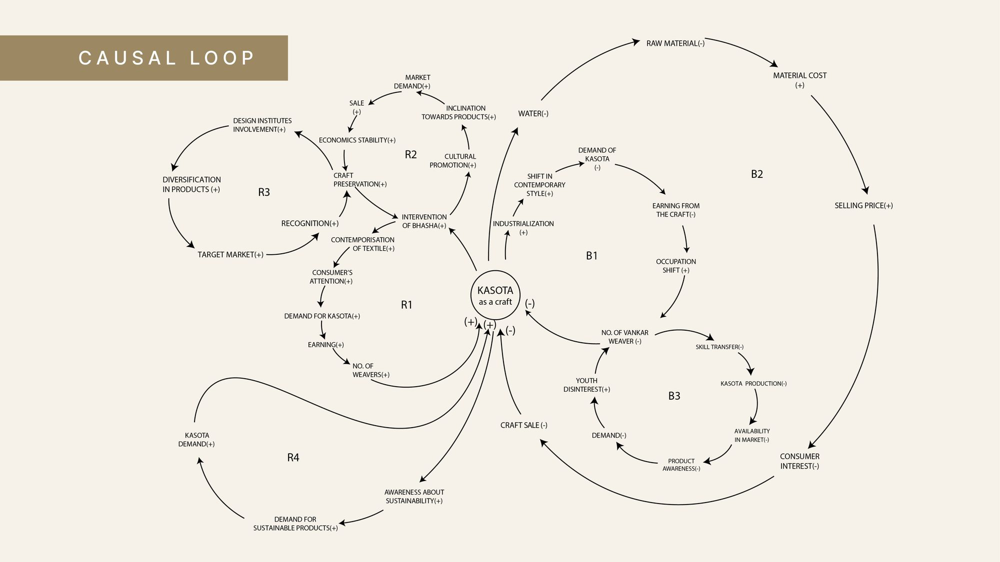

(Scroll for more)
Craft is Kasota weaving
Place is Tejgarh, Chhota Udepur, Gujarat
Approach is Systems thinking · craft documentation
A comprehensive ecosystem map of the Kasota craft practised in Tejgarh village, Chhota Udepur, Gujarat. Using a systems-thinking approach, the project identifies and analyses the craft's components and interdependencies: artisans, raw material, market dynamics, cultural significance and external influences.
Methods: Field study, place–people mapping, causal loop analysis, craft documentation book



(01)Context
Tejgarh is a rural settlement that blends natural diversity, traditional livelihoods and evolving community structures. Agriculture and livestock are the main livelihood. Rathwa, Nayak, Tadvi and Muslim communities live in their own faliyas (neighbourhoods), alongside the Vankar weavers who keep Kasota, a traditional woven textile, alive.
(02)The problem
Migration, declining artisan participation and commercialisation are wearing away the craft's identity. Fewer young people take up weaving, skills pass on less often, and without awareness and demand, Kasota risks disappearing.
(03)The process
The work followed four objectives:
- Analyse the place–people relationship: how Tejgarh's geography, culture and economy shape the making of Kasota.
- Apply a systems-thinking approach: the interdependencies between artisans, resources, processes and markets.
- Identify challenges and threats: migration, declining participation and commercialisation.
- Explore opportunities for preservation and growth.
A causal loop diagram brought these together. Occupation shift, youth disinterest and weaker skill transfer reduce the number of Vankar weavers, Kasota production and its availability in the market. On the other side, involvement of design institutes, product diversification, contemporary styling and growing interest in sustainable products raise demand, earnings and cultural promotion.
(04)The solution
The loops point to where effort pays off: strategic interventions, policy recommendations and innovative approaches that make Kasota economically viable for artisans while keeping its identity. That means diversified and contemporary products, collaboration with design institutes, and telling the craft's sustainability story to new markets. The research is documented in a craft book.